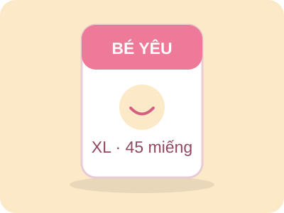

Tã cho bé
Tã quần dịu nhẹ size M - 50 miếng
Size M · 6–11 kg · 50 miếng
Giá gốc: 250.000 đ
200.000 đ
Tương đương 4.000 đ/miếng
So sánh quy cách và giá trên từng miếng để lựa chọn thuận tiện hơn.
4 lựa chọn dành cho bé
Tã cho bé
Size M · 6–11 kg · 50 miếng
Giá gốc: 250.000 đ
200.000 đ
Tương đương 4.000 đ/miếng
Tã cho bé
Size S · 4–8 kg · 40 miếng
Giá gốc: 190.000 đ
152.000 đ
Tương đương 3.800 đ/miếng
Tã cho bé
Size L · 9–14 kg · 60 miếng
Giá gốc: 250.000 đ
210.000 đ
Tương đương 3.500 đ/miếng

Tã cho bé
Size XL · 12–18 kg · 45 miếng
Giá gốc: 225.000 đ
180.000 đ
Tương đương 4.000 đ/miếng
Thông tin, giá và hình ảnh trong trang là dữ liệu minh họa phục vụ bài tập. Các nút chưa có chức năng mua hàng.